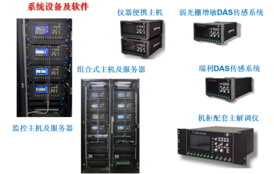
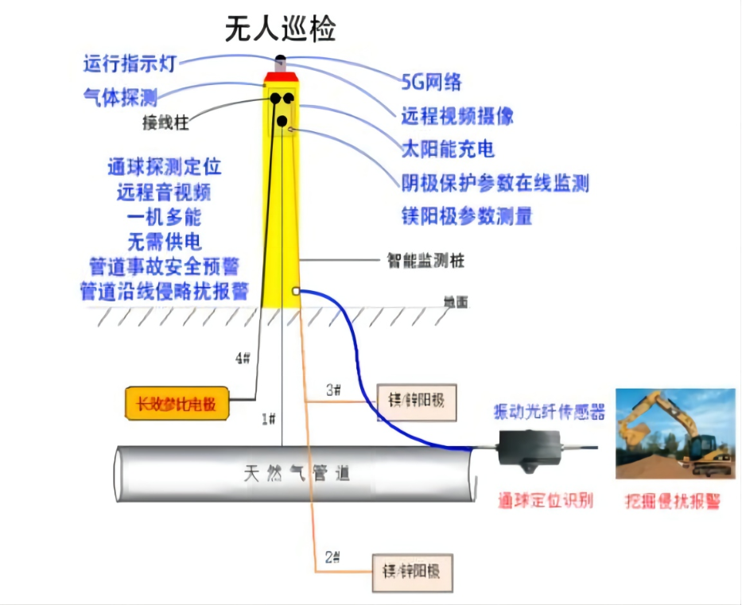

分布式光纤传感 · 全自主国产化
硬件全域感知
城市生命线的全感知神经网络 —— 无盲区、免维护、高精度
核心指标
25 km
单套最大探测距离
≤5 m
事件定位精度
≤5 s
报警响应时间
≥93%
事件识别准确率
≤5%
综合误报率
±0.05℃
温度测量精度
10⁻⁸
应变分辨率
≥25 年
设计使用寿命
三大核心技术创新
📈
结构增敏 & 空间压缩感知
费马螺线结构封装设计，灵敏度提升 30%以上。空间压缩感知技术在不依赖超高速采集前提下，精准捕捉 0.1m³/h 的管道微小泄漏声纹特征。
📍
高精度分布式定位
波分复用 + 时分多址 + 主动零差解调，突破长距离与高精度不可兼得瓶颈。米级空间分辨率，精准锁定隐患位置。
🔗
多参数复合传感
瑞利 + 布里渊 + 拉曼散射融合，单根光纤同步监测振动、应变、温度、声学。一纤多能，大幅降低建网成本。
核心硬件产品
📡
分布式光纤传感解调仪
- ▸ 国产化率 100%，核心元器件自主可控
- ▸ 单台售价 35万元（仅为进口同类 1/4 ~ 1/3）
- ▸ 核心器件：窄线宽激光器、声光调制器、平衡探测器、FPGA
- ▸ 接口：标准单模光纤，可复用现有通信光缆
🔩
结构增敏型传感阵列
- ▸ 无源免供电、抗电磁干扰、耐腐蚀防爆
- ▸ 防护等级 IP68，工作温度 -40℃ ~ +85℃
- ▸ 适用于直埋、附着于管道/桥梁/隧道表面
- ▸ 三分量声学检波器 + 声敏法兰盘
系统设备与无人巡检实拍

分布式光纤传感系统设备（解调仪、机柜、便携主机）

无人巡检 · 一机多能（气体探测、通球定位、阴极保护等）
* 实物图展示：左图为核心硬件及服务器系统，右图为多功能无人巡检终端
工程部署优势
🛠️
气吹法微创铺设
无需大规模开挖，施工成本降低 40%
🔌
复用现有通信光缆
无需额外布线，大幅降低部署门槛
♻️
全生命周期免维护
光纤寿命 ≥25年，无需频繁更换校准
权威认证 & 知识产权
📜
国家光学机械质量监督检验中心
检测认证通过
🔖
多项实用新型专利
覆盖核心光路、结构封装、算法
📄
科技查新报告
国内领先水平认定
🇨🇳
100% 国产化合规
适配政务采购安全要求